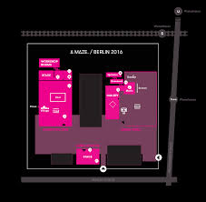

10 GAMES AND LESSONS FROM A MAZE.
I’ve been living, dreaming, and all-out living A MAZE. Berlin for the past few months.
I moved to Germany to immerse myself in game-making and spaces of experimental play. I asked around about weird game gatherings, and found A MAZE.
I reached out to A MAZE., and got to work doing experience design, logistics, planning, and problem solving.

Onsite, a month before A MAZE.
A MAZE. Berlin is an experimental games showcase, conference, awards show, party, and cluster of unspeakable magic rolled into three venues and an unfolding black box of expanding dimensions.
A MAZE. Venue Map, by Santiago Pastor
A MAZE. Berlin had 5500 visitors this year. There were 89 games, 41 talks, 9 workshops, and 17 musical performances. Working on A MAZE. Berlin was exhilarating, creatively inspiring, and life-expanding.

While playing games at A MAZE. I found that the mechanics, themes, and stories of specific games aligned perfectly with the lessons I was learning on the ground, in my work helping with the festival.
I wrote some of them here: each lesson matched with a game.
NO PAIN NO GAIN
Loic Perillier, Tom Victor, Tim Guthmann, and Pierre Corbinais (France)

No Pain No Gain is a game about running, jumping, and smashing your body against a wall in specific shapes. Your score is based on how perfectly you splatter against the wall, as captured by a camera. Your success relies on your commitment to the jump, creativity, and artfulness: halfhearted jumps will get you a terrible score.
Working on A MAZE., there were a lot of wild leaps towards walls. Having never attended A MAZE. before, I needed to trust in the process, and aim for perfect form at high speed towards an unmoving wall.
Events are all about creating one perfect moment, whatever the cost. You need to aim unfalteringly at your goals, trust in your abilities, and focus on the moment of impact.
Lesson One: Trust in the wall, trust in your vision, and run for it (pain is inevitable).
LA DISCIPLINE DU RECTANGLE
One Life Remains (France)

La discipline du rectangle is a very physical game: you are projected on a screen with a box around you, and you must stay inside the box. But the box is constantly shifting and erratically resizing. You have to scramble and contort your body to meet the changing demands of the box.
Logistics for a massive event always involve making and then shifting plans to meet circumstances. You can’t control the weather, no-shows, or spontaneously breaking equipment. Each of these can impact dozens of other plans.
Part of good planning is having multiple plans, spreadsheets that fork into different directions based on circumstances, and the nimbleness and energy to shift the entire body of the beast when needed. Priorities change, materials change, resources change, and you must follow, or fail. Part of being in control means knowing what is out of your control.
Lesson Two: Build nimble plans that easily allow for change (have a backup plan for your backup plan).
CODEX BASH
Alistair Aitcheson (United Kingdom)

Codex Bash is a puzzle game with four big, widely-spaced, brightly coloured buttons to push. The game is easiest to play with four players, as it’s hard to solve the riddles while racing from button to button. Generally there is a lot of howling: “hit the RED button”. There will always be someone howling “RED” at you. The trick is knowing who to trust before you hit the button.
Working on a major event, you can’t possibly know or manage all the moving parts. You need to accept help. Unfortunately, half of all help simply makes more work. The time and energy spent communicating, showing, guiding, checking, and correcting can sometimes end up being more work than simply doing it yourself. Because of this, it’s easy to fall into stressful habits of doing everything yourself. This is no good.
During A MAZE, working with 80+ volunteers, I made a simple rule for myself. If someone offered to help me, and it was reasonably easy to accept their help, I would gratefully accept (even if it felt like a small task that was easier to do myself). However, if managing the help was more work than simply doing it myself (especially if the helper’s history of helping was high investment/low returns) I would decline.
Lesson Three: Always accept help, unless the help is more work.
INTERGALACTIC JELLYFISH
Carmen Johann, Alice Boudry, George Buckenham, Marie-Emmanuelle Lemesre, Stéphane Gros, Saskia Kemna, Dimiter Petrov, Pepijn Willekens

Intergalactic Jellyfish is a game where you spray your arm with some weird gel, insert your hand into a decorated cardboard box, grab some peanuts, and give the peanuts to a jellyfish. There are tentacles in the box, and you must avoid them or the webcam that is helping you to find your way will glitch out more and more.
Working in any community is all about nuance. Details are everything when it comes to people’s experience. If you are careless in your work, you will knock over people, you will fumble around, breaking connections and obfuscating your own path. You must always carefully consider the people and circumstances around you, especially if you are an outsider and new to a community. Your awareness and sensitivity to the nuance of ecosystems should always be a priority in your work.
Lesson Four: Respect nuanced community ecosystems or you’ll glitch your way into failure.
GENITAL JOUSTING
Team Swaffelen (Norway)

Genital Jousting is a game where wriggly penises on a screen vie to chase and penetrate each other (and then be penetrated). To play, you need to “press up to consent” on an embellished dildo joystick.
Consent is sometimes treated like a golden ticket, a one time act that allows for everything after. Falling headfirst into a project is a similar thing, where you say an initial yes, and then things unfold at you at a rapidly increasing rate.
Sometimes your perspective or the situation changes and something that was fun becomes distinctly unfun. Consent is an all-the-time process, not a single act. Exercising your “yeses” and “nos” along the way make you better at your job, and better at life. It’s easy to get caught in a mental loop of unquestioned continuance, but you serve yourself and others better when you frequently check in and say to yourself: “do I want this?”
Lesson Five: Ongoing consent is critical to good work: part of consent is saying no.
OPEN SCREENS
A MAZE. / Philipp Schaefer

‘Monster Garden‘ by Zack Wood via Sebastian Herrmann
The Open Screens aren’t a game, they are a space for games: a space where games can be shown for short periods of time. Open Screens are a haven for emerging and experimental game-makers.
Creating this kind of entryway pollinates the entire festival with a feeling of inclusivity and possibility. Maintaining ground level access points that are open to new makers and creators keeps the festival grounded in the community that holds it up.
Lesson Six: Creating an accessible entryway fosters inclusivity, possibility, and continued relevance
DYG
Burgess Voshell (USA)

Dyg is a game where you are trying to dig your own (deep) grave as the sun goes down. The game is visually simple, a sinking sun over a single digging player. If you get in the rhythm of pressing the keys properly you will dig a deep hole, if you don’t, your shovel will clank as the orange sun comes closer and closer.
Working through an event (or living through a life) is similar. If you get in a rhythm, everything becomes easier. When you falter and stumble around, you hit a lot of problems, issues, and closed doors. When you find your work rhythm, successes seem to pile on top of each other. You just need to keep taking slow deep breaths and get through it, shovel by shovel.
Lesson Seven: Work is easier when you find a rhythm and work through it piece by piece (still: life is hard and then you die).
KEEP TALKING AND NOBODY EXPLODES
Steel Crate Games Inc. (Canada)

Keep Talking and Nobody Explodes is a game where one player is trapped in a virtual room with a ticking time bomb. The other players are “experts” of various types who need to decipher codes and give directions. The experts can’t see the bomb, and the trapped player can’t see the manual: everyone needs to trust each other.
In event-related work, you need to be a good communicator under enormous pressure. You can’t micromanage, and you need to rely on other people to do their jobs. It comes down to treating other team members with respect, trust, and working on better communication rather than snatching the controller.
Lesson Eight: Communication and trust are everything (communicate or everything will explode).
LIEVE OMA
Florian Veltman (France)

Lieve Oma is a game about a small child gathering mushrooms with their grandmother in a forest. It’s a gentle game, immersive and meandering.
Many of the most important things about communities and spaces can’t be articulated through emails or rule-sheets, they need to be unspooled through patient presence, through walking and working together.
Knowledge transfer comes in strange and unknowable ways. Some of the most valuable mentoring and guidance I received at A MAZE. came from working alongside volunteers, staff, and game developers on soft mundanities like lugging cases of water, coiling cables, or assembling chairs.
Lesson Nine: Some things are only learned working shoulder to shoulder (grandma knows best).
LUCID TRIPS
VR Nerds / Lucid Trips (Germany)

Lucid Trips is a Virtual Reality experience which takes place in planetary dreamworlds. You use your arms to leap and fly through impossible landscapes.
It can be alluring when entering a new environment or community to constantly draw parallels with the places and people that you know. To make the foreign known by flattening it with metaphor. But part of the joy of entering new worlds is in allowing the newness, in opening yourself up to the strangeness and the joy of not having answers, not knowing anything, being overtaken by otherness and wonder and possibility.
Lesson Ten: Be open to new worlds, to wonder, to entirely alien experiences.
FINAL THOUGHTS
Of course, most of what I learned at A MAZE. is under the surface, rogue, totally unwilling to be tidied into a list. If you want me to show you my spreadsheets, I’d be delighted, but I don’t think the magic is there. The learning is in the doing.
Probably that’s the way learning should be: inarticulable, living, uncomfortable; coursing through subterranean labyrinths of experience and reflection; only accessible by the meat bag who is lucky enough to tangled up in it.